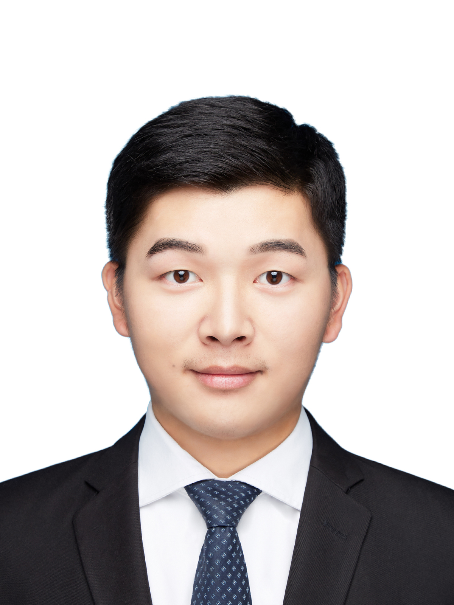

Jinxin Wang (王金鑫)Ph.D. Student @ the Chinese University of Hong Kong Room 905, William M.W. Mong Engineering Building, Email: jxwang[at]se.cuhk.edu.hk, jinxin_wang[at]pku.edu.cn |

|


BiographyI am Jinxin Wang, a second-year PhD student at the Chinese University of Hong Kong advised by Prof. Anthony Man-Cho So. Prior to joining CUHK, I obtained MPhil in Data Science from Peking University supervised by Prof. Zaiwen Wen, and bachelor's degree in Applied Mathematics (Loo-Keng Hua Talent Program) from Dalian University of Technology. In addition, I was an exchange student under the supervision of Prof. Xin Liu at the Academy of Mathematics and Systems Science (AMSS), the Chinese Academy of Sciences (CAS), and an intern in Didi (Mentor: Dr. Zhe Xu) as well as Huawei Theory Lab (Mentor: Dr. Fan Zhang and Mr. Gong Zhang). My research interest lies in optimization theory and algorithm design for signal processing and machine learning, especially in nonconvex/nonsmooth optimization. |
||
Publications
Sparse High-Order Portfolios via Proximal DCA and SCA. [paper]
Joint Bandwidth Allocation and Path Selection in WANs with Path Cardinality Constraints. (* indicates equal contribution) |
||
Awards
|
||
Professional ServicesReviewer for
|
||
Teaching AssistantSEEM 3500 Quality Control and Management (Instructor: Prof. Huifu Xu), 2021 SpringENGG 2760D Probability for Engineers (Instructor: Prof. Huifu Xu), 2020 Fall |
||
CoursesMATH 5061 Riemannian Geometry I, by Prof. Martin Man Chun LI, 2022 SpringSEEM 5380 Opt Methods for High-Dimensional Stat, by Prof. Anthony Man-Cho So, 2022 Spring ENGG 5781 Matrix Analysis and Computations, by Prof. Wing-Kin (Ken) Ma, 2021 Fall SEEM 5650 Integer Programming, by Dr. HO, Sin Cheung, 2021 Spring SEEM 5580 Advanced Stochastic Models, by Prof. Xuefeng Gao, 2021 Spring SEEM 5350 Numerical Optimization, by Prof. Huifu Xu, 2020 Fall ENGG 5501 Foundations of Optimization, by Prof. Anthony Man-Cho So, 2020 Fall |
||
|
Last updated date: Aug 2021. |